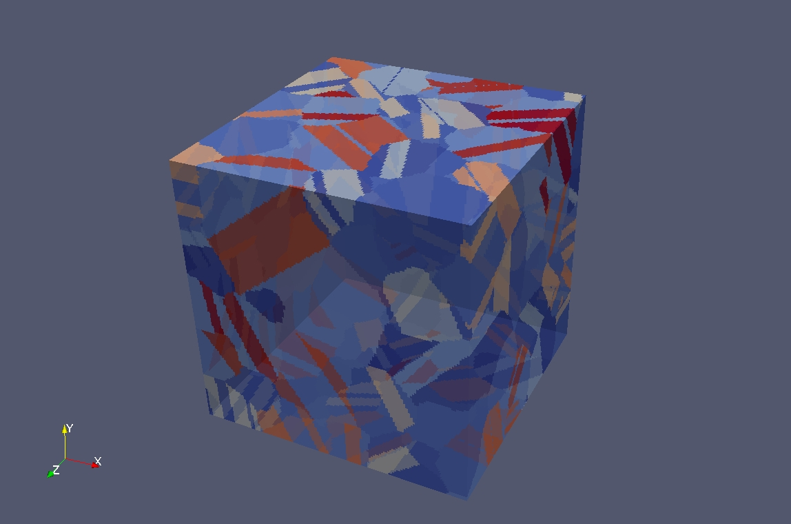

Ultrasonic Scattering and Attenuation
Ultrasonic scattering and attenuation is being used to detect microstructural properties of the material. Ultrasound wave scatters when it passes through the grains of polycrystalline materials. Grain boundaries are the main sources of ultrasonic scattering and attenuation. Ultrasonics theories like Weaver's model is specially helpful to understand ultrasonic responses in polycrystalline materials.
Synthetic Microstructures
DREAM.3D and Neper are two of the most prominent softwares for creation of two and three dimensional synthetic microstructures. Microstructures having different crystal symmetries with realistic euler angles and texture can be generated using these softwares. I use the theoretical models to numercially calculate the ultrasonic responses on these synthetic microstructures. The ultimate goal of the research is to be able to predict the microstructural properties based on the experimental ultrasonic measurements.


Neper code for Laguerre polycrystals

Voronoi polycrystals
High Performance Computing
As part of the researcher's community at University of Nebraska-Lincoln I have acess to Holland Computing Center (HCC). HCC is a High Performace Computing center which is based on SLURM. For simulating synthetic microstructures with large number of grains and for numerical calculation of ultrasonic phase velocity and attenuation HCC is super effective.
High Throughput Computing
Recently, I was invited to attend the Open Science Grid(OSG) school in 2019. OSG is a platform dedicated to allow researchers to utilize idle super computing resources. Using High Throughput Computing(HTC) OSG gives access to super computing power without any charge. Below is the group photo of the school participants.